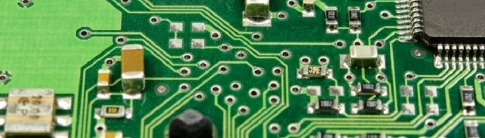

IoT Blog Home
This blog serves a dual purpose. First to document my experiments with the internet of things (and likely other circuitry projects) and second to expand my skills in web development (html, javascript, and css). Enjoy (or not! I don't care!).